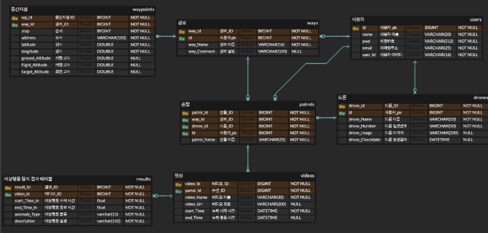
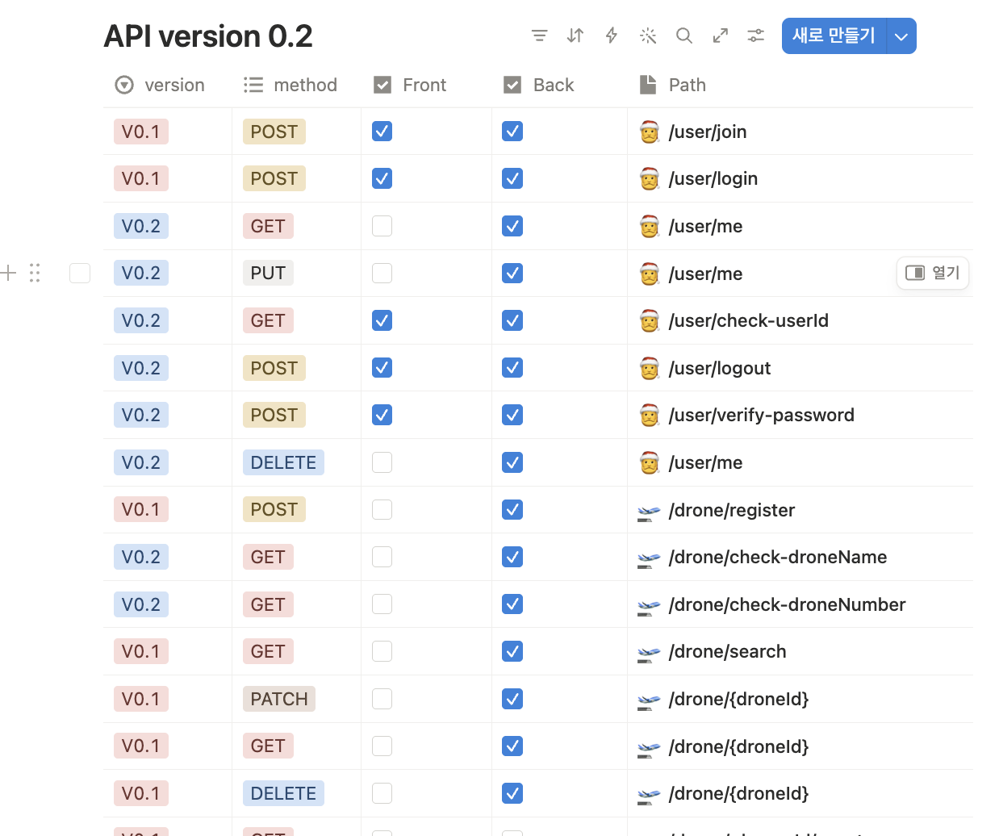
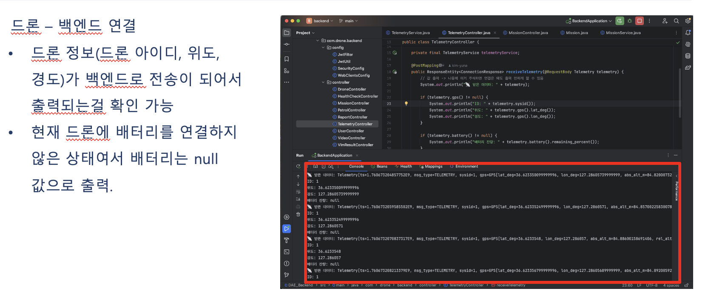
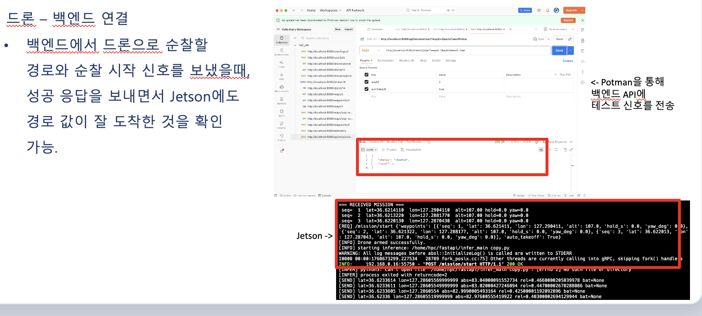
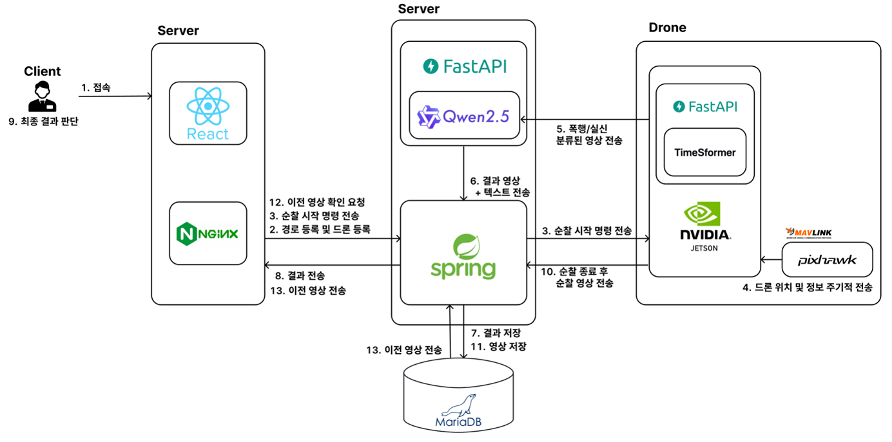

01. Project Overview
이 프로젝트는 관리자가 웹 서비스를 통해 드론의 자율 순찰을 제어할 수 있도록 지원하는 웹페이지 구현 프로젝트입니다.
사용자는 웹 화면에서 드론 순찰 관련 기능을 확인하고, 지도에서 자율 주행할 경로를 선택하여 순찰을 수행시킬 수 있습니다.
서버는 드론과 연결된 Jetson 장치와 통신하여 순찰 명령 및 상태 신호를 주고받는 구조로 설계했으며, 관리자가 드론의 동작 상태를 웹 화면에서 시각적으로 확인할 수 있도록 구성했습니다.
저는 이 프로젝트에서 관리자 웹페이지의 화면 구조를 설계하고, 서비스 동작에 필요한 백엔드 API, 데이터베이스, Jetson 연동, Docker 기반 배포 환경 구성을 담당했습니다.
02. Motivation & Goal
기존의 드론 순찰은 관리자가 근거리에서 직접 조종하거나, 촬영된 영상을 사람이 직접 확인하여 상황을 판단해야 하는 경우가 많습니다. 이 방식은 순찰 범위가 제한되고, 문제 상황이 발생했을 때 즉각적인 상황 파악과 대응이 지연될 수 있다는 한계가 있습니다.
본 프로젝트는 관리자가 드론을 직접 조종하지 않고도 웹페이지에서 순찰 경로를 지정하면, 드론이 해당 경로를 따라 자율 주행하며 순찰을 수행할 수 있도록 하는 것을 목표로 했습니다. 또한 드론의 연결 상태, 순찰 상태, 동작 정보를 관리자가 한 화면에서 시각적으로 확인할 수 있도록 구성하여 운영 편의성을 높이고자 했습니다.
03. My Role
UI Design
관리자 웹페이지의 화면 구조와 UI 흐름을 설계했습니다. 실제 프론트엔드 구현보다는 서비스 사용 흐름과 화면 구성을 중심으로 담당했습니다.
사용자가 드론의 연결 상태, 순찰 상태, 경로 설정 정보를 한 화면에서 확인할 수 있도록 화면 구조를 피그마로 설계했습니다.

Database
MariaDB를 활용하여 서비스에 필요한 데이터베이스 구조를 설계하고 구성했습니다. 필요한 테이블과 관계를 ERD 형태로 정리했습니다.
드론 정보, 순찰 경로, 순찰 기록, 사용자 및 관리자 정보 등 서비스 운영에 필요한 데이터를 저장할 수 있도록 데이터베이스 구조를 구성했습니다.

Backend API
Spring Boot를 활용하여 웹 서비스에 필요한 백엔드 API를 구현했습니다. 드론 순찰 서비스에서 필요한 데이터 처리와 요청 흐름을 담당했습니다.
관리자의 요청을 처리하고, 데이터베이스와 연동하여 순찰 관련 데이터를 저장하거나 조회할 수 있도록 서버 API를 구현했습니다.

Drone-Server Communication
드론에 연결된 Jetson과 Spring Boot 서버가 신호를 주고받을 수 있도록 FastAPI 기반 연동 구조를 구성했습니다.
Jetson에서 FastAPI 서버를 실행하고, Spring Boot 서버와 통신하도록 구성하여 드론의 신호가 웹 서비스까지 전달될 수 있도록 했습니다.


Deployment
Docker 컨테이너를 활용하여 수정된 서버 코드를 서비스에 반영할 수 있는 배포 환경을 구성했습니다.
04. System Architecture
전체 시스템은 관리자 웹페이지, Spring Boot 서버, MariaDB 데이터베이스, Jetson의 FastAPI 서버, 드론으로 구성됩니다.

05. Source Code
프로젝트에서 구현한 백엔드 API, 데이터베이스 구성, Jetson-FastAPI 연동 및 Docker 배포 관련 코드는 아래 GitHub 저장소에서 확인할 수 있습니다.
GitHub Repository 보기 →06. Demo Video
자율 순찰 드론 웹 서비스의 동작 흐름을 확인할 수 있는 시연 영상입니다.